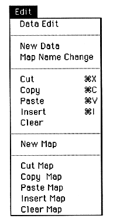
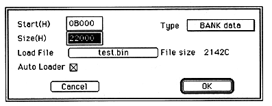

Return to previous page ｜ Return to menu ｜ Go to next page
-
Edit menu
When the - Edit menu is opened, the following display appears.

- Data Edit
When - Data Edit is selected, the following dialog box opens.

Change the map information data here. You can set the start address, area size, data type, transfer file, autoload specification. When a transfer file is specified, the size of the specified file is displayed in bytes, which can be used as a guideline for determining or changing the area size.
This menu can be obtained by double-clicking EditWindow.
Return to previous page ｜ Return to menu ｜ Go to next page